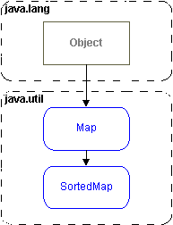
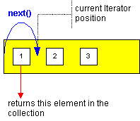
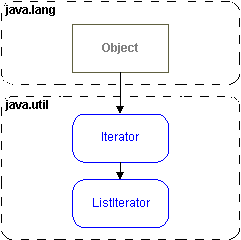

A List
is usually represented by an ordered sequence of Objects. Usually duplicates
are allowed. The ordering in a List is zero based, like java arrays.
java.util.List extends the basic definition
of a collection with these methods :
| boolean add(Object o) |
appends the object to the end of the collection and returns true. |
| void add(int index, Object
o) |
inserts the Object into the collection at the index position. |
| boolean contains(Object o) |
returns true if the collection contains that Object. |
| ListIterator listIterator() |
returns an object that implements the ListIterator
interface, and which can be used to 'visit' and update each element
in the collection. |
| Object remove(int index) |
returns the Object removed from the index position. |
| Object set(int index, Object
o) |
returns the Object replaced at index position with another Object. |
| Object get(int index) |
|
A Set,
is a collection that represents a mathematical set. A Set allows no duplicates,
and once you add an Object to a Set, you must not then change its value.
In order for a SortedSet to add a sort order
to a collection of Objects, those Objects must either be Comparable
(they must implement the Comparable interface
and the compareTo() method) or you must supply
a Comparator object when constructing the
SortedSet. SortedSet, adds the following methods :
| Object first() |
|
| Object last( ) |
|
| Comparator comparator() |
returns an object that implements the Comparator
interface, and which is used to 'sort' the collection. |
| SortedSet headSet(Object from) |
returns a subset |
| SortedSet tailSet(Object to) |
returns a subset |
A Map
represents matched pairs of key -> value Objects. One key to
one value. No duplicate keys are allowed, and the value of a key
must not change after it has been added to the collection.
A Map supports the following methods :
| boolean
put(Object key,
Object value) |
|
| boolean
containsKey
(Object key) |
|
| boolean
containsValue
(Object value) |
|
| Object get
(Object key) |
returns the value corresponding to a key |
| Set entrySet() |
returns a set of the inner class Map.Entry |
| Set keySet() |
returns a set of the keys |
| Collection
values() |
get an Iterator to
visit all the values in the Map. |
|
figure: The Map interfaces.
 |
A SortedMap adds support
for ordering a Map by ascending key sequence,
when the keys are Comparable, or if you supply
a Comparator when constructing the collection.
A SortedMap adds the following methods :
| Object firstKey()
Object lastKey() |
returns the first / last keys in the SortedMap |
| Comparator comparator() |
returns an Object that
can be used to compare keys. |
| SortedMap headMap(Object
toKey)
SortedMap tailMap(Object fromKey) |
return subsets of the SortedMap
collection. |
The Iterator interface
defines a way to 'visit' elements in a collection in a way independent
from the type of collection. In Java 1.2 it replaces the older Enumerator
interface, with better method names and functionality to remove
elements that have been visited.
Iterators are 'fail fast' which means that, if a collection is structurally
modified by another iterator or thread of execution, after this
iterator is constructed, it will raise a ConcurrentModificationException.
You can think of an Iterator as a sort of 'cursor' between elements
in a collection.
figure: Iterators have a position.

|
figure: The Iterator interfaces.
 |
The basic methods supported by an Iterator
are :
| Object next() |
jumps over the next element and returns it. |
| boolean hasNext() |
returns true while there is a next element. |
| void remove() |
removes the element last visited from the underlying
collection. |
A ListIterator
adds methods for lists that have some inherent order :
| void
add(Object o) |
inserts the Object before the
current Iterator position in the list. |
| Object
set(Object o) |
updates the Object last 'visited'
|
| boolean
hasPrevious() |
returns true
while there is a previous element. |
| Object
previous() |
jumps back through the list,
returning the element jumped over. |
|
|